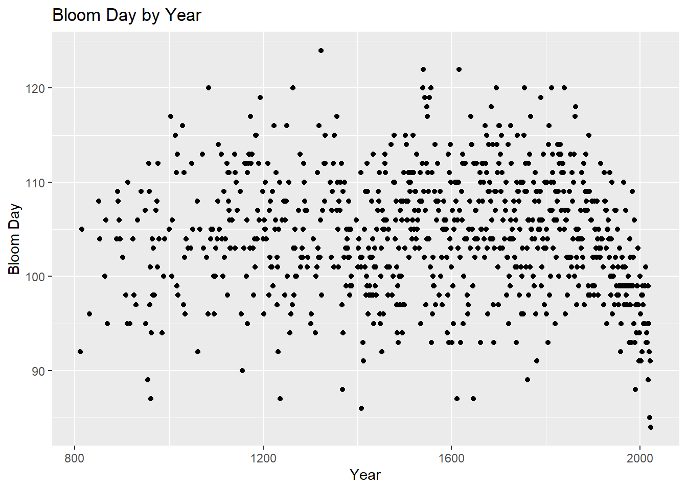
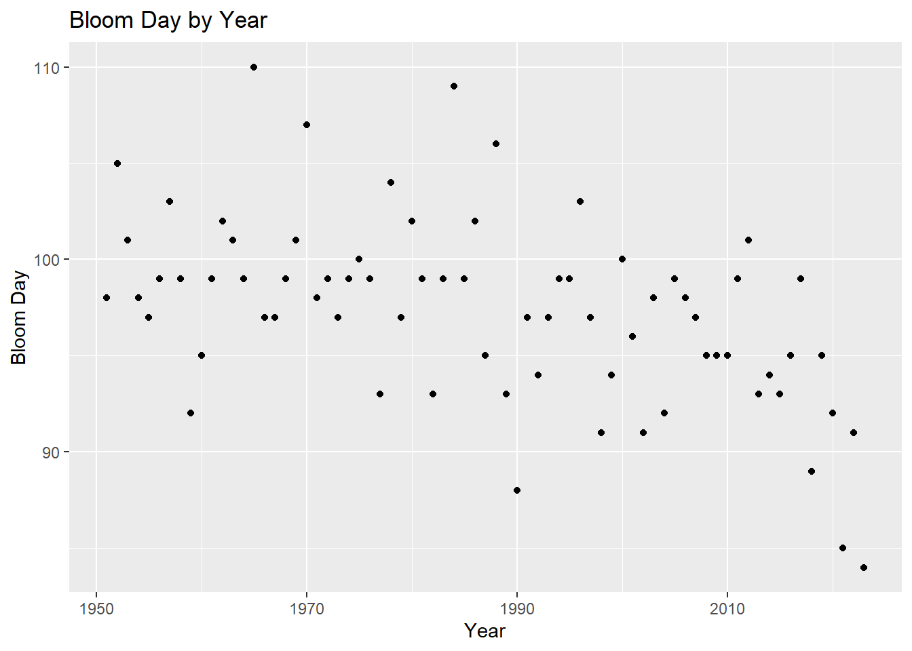

A time series analysis to forecast 2024 cherry blossom bloom date
analysis
Author
Aditya Ranade
Published
March 1, 2024
Modified
March 4, 2024
Cherry Blossom is one of the most scenic visuals one can experience. In the recent past, cherry blossom season marks the arrival of spring season which can be considered as a transition from winter to summer. People try to make plans travel to enjoy this phenomenon. So how about using some simple statistical techniques to try and forecast / predict the peak cherry blossom time ?
Along with some of my fellow PhD classmates, I participated in the International Cherry Blossom Prediction Competition hosted by George Mason university. We explored a lot of models and I am going to show a very basic model which I tried during the early stages. The model is the Autogegressive (AR) model. The notation of this model is AR(1) model is as follows
\[
Y_{t} = \beta_{1} Y_{t-1} + \epsilon_{t}
\] where \(\beta_{i}\) is the model parameter and \(\epsilon_{t}\) is the white noise
This simply means the present value of the response variable (in our case the bloom day in this year) is influenced by the previous value fo the response variable (in our case the bloom day of the previous year). If you are aware of the simple linear regression, think of this as the explanatory variable being the same as the predictor variable in rough sense. In the competition, we tried to predict the bloom date for multiple location across the world based on the data available provide by the university. However, for the purpose of this post, I will show the analysis only for one location, Kyoto in Japan.
Let us start with first reading in the dataset and loading the R packages required for the analysis
# Load the packageslibrary(forecast)library(ggplot2)library(fpp2)library(dplyr)library(vars)# Load the datasetkyoto <-read.csv("https://raw.githubusercontent.com/GMU-CherryBlossomCompetition/peak-bloom-prediction/main/data/kyoto.csv",header=T)# Plot of the bloom date over the yearsggplot(kyoto,aes(x=year,y=bloom_doy))+geom_point()+labs(x="Year",y="Bloom Day")+ggtitle("Bloom Day by Year")

As we can see from the plot, towards the later end which means in the recent past, the bloom day has started to go down. Let us look at the plot only from the year 1950 onwards.
# Filter data only for year since 1951kyoto_new <- kyoto %>%filter(year>1950)# Plot of the bloom date over the yearsggplot(kyoto_new,aes(x=year,y=bloom_doy))+geom_point()+labs(x="Year",y="Bloom Day")+ggtitle("Bloom Day by Year")

As we can see from the plot from year 1951 onward, there seems to be a downward trend which indicates the bloom date is in general going down.
We will use the data from 1951 to 2022 to predict the bloom date for year 2023 and compare that to actual bloom date. For this, we will use the bloom day as response and the year as the predictor
# Prepare the data for ARIMA(1,0,0) modely_kyoto <- kyoto_new$bloom_doy # bloom day as the response
Exclude the year 2023 response and explanatory variable to test the model on year 2023
# First test on 2023 modelytest <- y_kyoto[-length(y_kyoto)] # exclude the bloom day for 2023 year# Model based on year 1951 to 2022fit_kyoto_test <-Arima(ytest, order=c(1,0,0))fit_kyoto_test
Series: ytest
ARIMA(1,0,0) with non-zero mean
Coefficients:
ar1 mean
0.2307 97.5165
s.e. 0.1154 0.6759
sigma^2 = 20.18: log likelihood = -209.35
AIC=424.69 AICc=425.04 BIC=431.52
# Check actual bloom date for 2023y_kyoto[length(y_kyoto)] #84
[1] 84
The AR(1) model predicts 96 as the bloom day for year 2023 whereas the actual bloom day was 84 for year 2023 which is a difference of 12 days. Considering its a basic model, this does not seem to be too bad.
Now we check the performance of the model using some charts where we first check the prediction plot, then the Regression and model errors.
# Plot the predictionautoplot(fcast_kyoto_test) +xlab("Year") +ylab("Percentage change")
# recover estimates of nu(t) and epsilon(t) cbind("Regression Errors"=residuals(fit_kyoto_test, type="regression"),"ARIMA errors"=residuals(fit_kyoto_test, type="innovation")) %>%autoplot(facets=TRUE)
There does not seem to be any issues with either of the plots. Now we check the residuals to see if they are normally distributed.
# Check the residualscheckresiduals(fit_kyoto_test)
Ljung-Box test
data: Residuals from ARIMA(1,0,0) with non-zero mean
Q* = 10.055, df = 9, p-value = 0.346
Model df: 1. Total lags used: 10
The residuals seem to be normally distributed and the Ljung-Box test indicates we have little evidence against the null hypothesis of independently distributed errors.
Now we will use the data from 1951 upto 2023 to predict the bloom date for the year 2024. Basically its the same model with one extra data point available
# Now use data upto 2023 to predict 2024fit_kyoto <-Arima(y_kyoto, order=c(1,0,0))fit_kyoto
Series: y_kyoto
ARIMA(1,0,0) with non-zero mean
Coefficients:
ar1 mean
0.2821 97.2885
s.e. 0.1182 0.7483
sigma^2 = 21.84: log likelihood = -215.16
AIC=436.32 AICc=436.67 BIC=443.19
The model predicts the cherry blossom to bloom on day 93 which is April 2nd for Kyoto, Tokyo. Now lets look at the diagnostics of the model to see if the model is reasonable.
# Plot the forecastautoplot(fcast_kyoto) +xlab("Year") +ylab("Percentage change")
# recover estimates of nu(t) and epsilon(t) cbind("Regression Errors"=residuals(fit_kyoto, type="regression"),"ARIMA errors"=residuals(fit_kyoto, type="innovation")) %>%autoplot(facets=TRUE)
# Check the residualscheckresiduals(fit_kyoto)
Ljung-Box test
data: Residuals from ARIMA(1,0,0) with non-zero mean
Q* = 13.92, df = 9, p-value = 0.1252
Model df: 1. Total lags used: 10
Again, the residuals seem to be normally distributed and the Ljung-Box test indicates we have little evidence against the null hypothesis of independently distributed errors.